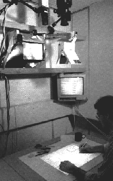

The Digital Desk
Paper meets projector

Overview
The Digital Desk was a research prototype created by Pierre Wellner at Rank Xerox EuroPARC in Cambridge. It augmented a normal office desk with an overhead video camera and a computer-controlled projector. The camera watched the desk surface, detected where the user was pointing (with an LED-tipped pen or stylus), and recognized paper documents placed on the desk. The projector could then overlay electronic images, controls, and text directly onto the paper, blending physical and digital work on a single surface.
Deep dive
Wellner’s project explored how to make the transition between paper and electronic information less awkward. Rather than forcing users to look back and forth between a physical desk and a computer screen, the Digital Desk turned the desk itself into a display and input surface.
A video camera mounted above the desk pointed down at the surface. Image processing detected pointing (initially via an LED-tipped pen) and recognized documents. A computer-controlled projector mounted above the desk displayed electronic objects, menus, numbers, and annotations onto the physical desk and onto paper documents. The system required coordinate transformations between the camera, the pointing device, and the projected image. * Early image-processing work focused on adaptive thresholding to convert grayscale camera images into clean black-and-white representations of documents and handwriting.
The “DigitalDesk Calculator” (UIST ’91) demonstrated tangible manipulation: a user could point at printed numbers on paper and the system would project a running calculation back onto the sheet. PaperPaint was a freehand drawing application developed on an early Digital Desk prototype. A CHI ’92 video, “Tactile Manipulation on a Digital Desk,” showed scenarios including sketching, note-taking, and expense calculations; the sketching segment is sometimes cited as an early instance of the multi-touch “pinch” gesture. The EuroCODE project (1992–1995) produced Ariel, a DigitalDesk tailored to annotating engineering drawings. Later work evolved into LightWorks and CamWorks*, over-the-desk video-capture systems for casual scanning.
The Digital Desk is widely recognized as one of the first projection-based augmented-reality systems and a direct ancestor of modern tangible and augmented-reality interfaces. It influenced research in interactive surfaces, digital whiteboards, and projected augmented reality.
Wellner originally envisioned using a finger — or two fingers for certain tasks — as the pointing device, though a tablet and stylus proved more practical at the time. Some of the famous CHI ’92 demo sequences were scripted “envisionments” because the real-time technology of 1991 could not yet fully realize the concepts.
Team & pioneers
- Pierre Wellner Researcher at EuroPARC and later at Rank Xerox; invented the Digital Desk, combining camera and projector to turn ordinary paper into an interactive surface.
- EuroPARC Xerox's European research laboratory in Cambridge, UK, where the Digital Desk prototype was built.
- Rank Xerox Industrial research organization supporting the work that merged physical documents with projected digital overlays.
Media

Sources
- Pierre Wellner, “The DigitalDesk Calculator: Tactile Manipulation on a Desk Top Display,” UIST ’91 Proceedings, pp. 27–33.
- ACM Digital Library, DOI 10.1145/120782.120785.
- Pierre Wellner, “Interacting with Paper on the DigitalDesk,” University of Cambridge Technical Report UCAM-CL-TR-330, 1994.
- Eindhoven University presentation slides, “The Digital Desk from Pierre Wellner in 1991.”
- NAVER LABS Europe, “DigitalDesk to CamWorks.”
- YouTube, “Tactile Manipulation on a Digital Desk (1991) Xerox.”
- YouTube, “Digital Desk” by Pierre Wellner, 1991.